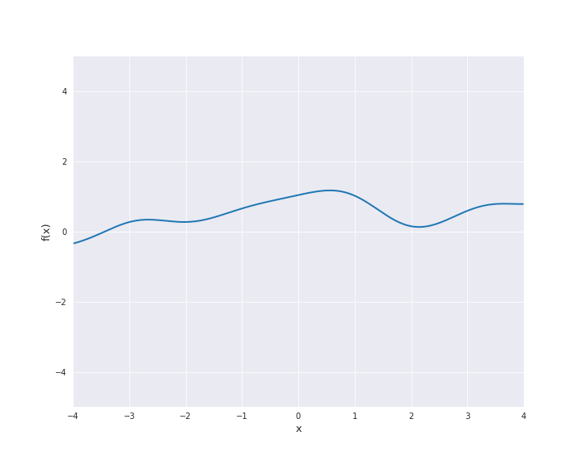

7.4. Kernel Functions¶
7.4.1. Examples of Kernels¶
As mentioned before, the choice of the kernel (the prior distribution) determines the properties of the Gaussian process and consequently also of the regression model. In the present section, we define the most common covariance functions and visualize the corresponding sample paths.
7.4.1.1. Linear Kernel¶
The linear kernel reads
where \(\beta_0 \ge 0\) and \(\langle x, x^{\prime} \rangle\) denotes the scalar product of \(x\) and \(x^{\prime}\). In the subsequent animation, we used \(\beta_0 = 0\).

7.4.1.2. Polynomial Kernel¶
The polynomial kernel is constructed by exponentiation of the linear kernel, i.e.,
where \(\beta_0 \ge 0\) and \(p \in \mathbb{N}\). In the subsequent animation, we used \(\beta_0 = 1\) and \(p=3\).

7.4.1.3. Squared Exponential Kernel¶
The squared exponential kernel is possibly the most important kernel in kernel-based machine learning. It is also called radial basis function (RBF) kernel. It is defined by
where \(r = |x - x^{\prime}|\) for \(x, x^{\prime} \in \mathbb{R}^d\). \(l\) is called length scale and is assumed to be positive. In particular, the squared exponential kernel is isotropic. In the subsequent animation, we used \(l=1\).
{kind=link}
7.4.1.4. Exponential Kernel¶
The (absolute) exponential kernel is another isotropic kernel and is defined by
where \(r = |x - x^{\prime}|\) for \(x, x^{\prime} \in \mathbb{R}^d\) and \(l\) is the length scale. In the subsequent animation, we used \(l=1\).

7.4.1.5. Matérn Kernel¶
The Matérn kernel denotes a class of isotropic kernels which is parametrized by a parameter \(\nu > 0\). The kernel is given by
where \(r = |x - x^{\prime}|\) for \(x, x^{\prime} \in \mathbb{R}^d\), \(l >0\) is the length scale, \(\Gamma\) is the gamma function and \(K_{\nu}\) is a modified Bessel function.
For \(\nu = 0.5\) the Matérn kernel becomes the exponential kernel and for \(\nu \rightarrow \infty\) the Matérn kernel approaches the squared exponential kernel. Thus, \(\nu\) determines the roughness of the samples paths and the samples paths get smoother as \(\nu\) increases.
The most interesting other cases for machine learning are \(\nu = 1.5\) and \(\nu = 2.5\). It holds
and
For both cases, sample paths are animated below with \(l=1\).
\(\nu = 1.5\):

\(\nu = 2.5\):

7.4.1.6. Rational Quadratic Kernel¶
The rational quadratic kernel denotes a family of isotropic kernels with parameter \(\alpha > 0\) defined by
with \(r = |x - x^{\prime}|\) for \(x, x^{\prime} \in \mathbb{R}^d\) and \(l > 0\). This kernel can be seen as mixture of squared exponential kernels with different length scales (see (4.20) in [1]). In the subsequent animation, we used \(\alpha = l = 1\).

7.4.1.7. Periodic Kernel¶
The periodic kernel is also called Exp-Sine-Squared kernel. It is given by
with \(r = |x - x^{\prime}|\) for \(x, x^{\prime} \in \mathbb{R}^d\). \(l\) is the length scale and \(p\) the periodicity. To illustrate the sample paths we used \(l=p=1\).

7.4.1.8. Brownian Motion Kernel¶
Since we illustrated the sample paths of Brownian motion as an example for a stochastic process, we state its covariance function. Nevertheless, this kernel is not of interest for our machine learning applications. It holds
for \(s, t \in \mathbb{R}_{> 0}\).
7.4.2. Combination and Modification of Kernels¶
It is possible to obtain new covariance functions from known kernels by recombination and/or modification.
Let \((f_1(x))_{x \in \mathbb{R}^d}\) and \((f_2(x))_{x \in \mathbb{R}^d}\) be two independent centered Gaussian processes with kernels \(k_1\) and \(k_2\), respectively. Moreover, let \(a : \mathbb{R}^d \rightarrow \mathbb{R}_{> 0}\). Then, sums and products can be used to generate new kernels \(k\) and Gaussian processes \(f\) from old ones:
Gaussian process |
kernel \(k(x, x^{\prime})\) |
|---|---|
\(f_1 + f_2\) |
\(k_1(x, x^{\prime})+k_2(x, x^{\prime})\) |
\(f_1 f_2\) |
\(k_1(x, x^{\prime}) k_2(x, x^{\prime})\) |
\(a f_1\) |
\(a(x) k_1(x, x^{\prime}) a(x^{\prime})\) |
Of course, the three approaches can be combined arbitrarily.
For example, by multiplication of the periodic kernel with the squared exponential kernel the locally periodic kernel is constructed:
where \(r = |x - x^{\prime}|\) for \(x, x^{\prime} \in \mathbb{R}^d\).
The sample paths are indeed locally periodic, i.e., the periodic part changes over time:
kernel1 = ExpSineSquared()
kernel2 = RBF()
def kernel(x):
return np.multiply(kernel1(x), kernel2(x))
# anim = get_anim(kernel, xbnd=4., ybnd=5.)

Furthermore, scaling of a Gaussian process with kernel \(k\) by a constant \(\sigma \ne 0\) (i.e., choosing \(a(x) = \sigma\) in the notation above) yields the kernel \(\sigma^2 k\). This is also a common approach to modify kernel functions.
Another possibility create anisotropic versions of isotropic kernels by modification of the euclidean distance. Recall that most of the examples stated above are indeed isotropic. The (squared) distance
for \(x, x^{\prime} \in \mathbb{R}^d\) can be replaced by
where \(M\) is a positive definite matrix. A very common special case is the diagonal matrix
with positive diagonal elements which results in
The values \(l_1, \dots, l_d\) are treated as hyperparameters of the kernel and are used to introduce component-wise length scales. For example, the anisotropic RBF kernel is given by
If all length scales coincide (i.e., \(l_1 = \dots = l_d = l\)), we reobtain the ordinary RBF kernel.
For additional techniques for creating new covariance functions please refer to section 4.2.4 in [1].
- 1(1,2)
C.E. Rasmussen and C.K.I. Williams. Gaussian Processes for Machine Learning. Adaptive Computation and Machine Learning. MIT Press, 2nd edition, 2006. URL: http://www.gaussianprocess.org/gpml/.